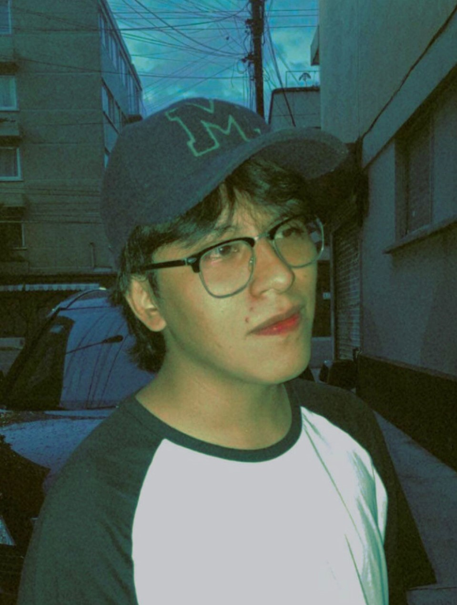

¡Hola, soy Eduardo Lomelí!

Soy un apasionado estudiante de diseño gráfico con experiencia en la creación de proyectos visuales creativos. Mi enfoque está basado en entender las necesidades del cliente y transformar esas ideas en piezas de comunicación efectivas.
Mi objetivo principal como diseñador gráfico es transmitir emociones y conceptos claros a través de elementos visuales. Trabajo principalmente en la creación de identidad visual, carteles, catálogos, pósters y más.
Cuento con una sólida formación en diseño gráfico y he trabajado en diversos proyectos durante mi carrera como estudiante. He tenido la oportunidad de colaborar con varios equipos y marcas, siempre buscando aplicar mi creatividad y habilidades técnicas.